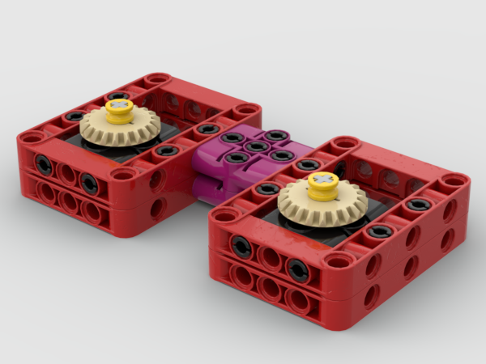
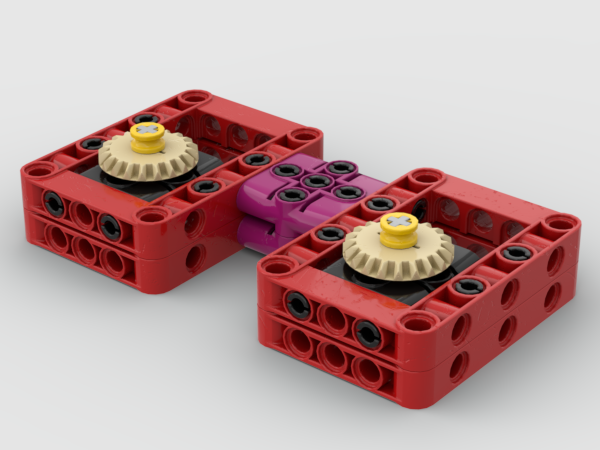

Free, High Quality FLL Robotics Education
Learn robot design, gears, frames, and strategy with interactive lessons and a plethora of downloadable Studio 2.0 CAD files. No paywalls.
 



What Professor Cheese Offers
- Interactive lessons paired with a plethora of Studio 2.0 files
- Approachable mentor-like tone
- Guidance on what to do and not to do

Why You Should Choose Professor Cheese
- 10 robust, structured learning modules
- 30+ starter Studio 2.0 CAD files for the fundamentals
- Designed specifically for FLL
- Built by a competitive FLL alumni